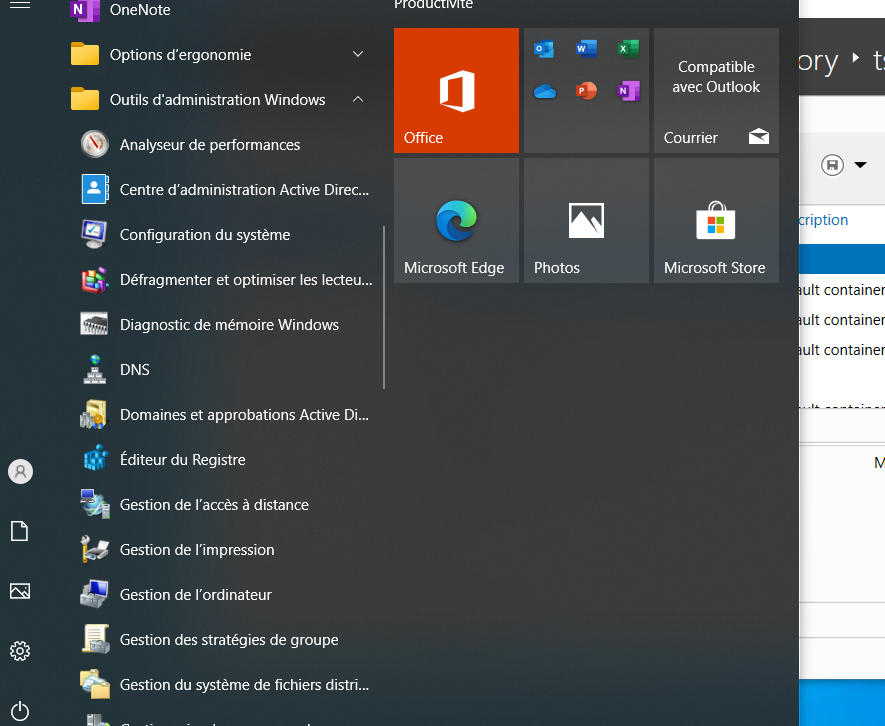

RSAT
Ajouter outils RSAT sur W10
Aller dans les paramètres Windows puis dans Applications et fonctionnalités
Cliquer sur Fonctionnalités facultatives

Cliquer sur Ajouter une fonctionnalité

Sélectionner les fonctionnalités que l'on souhaite ajouter

Outils d'administration Windows

Ajout des outils d'administration sur le serveur
Dans le gestionnaire de serveur, cliquer sur Gérer puis Ajouter des rôles et des fonctionnalités
Sélectionner les fonctionnalités ci-dessous